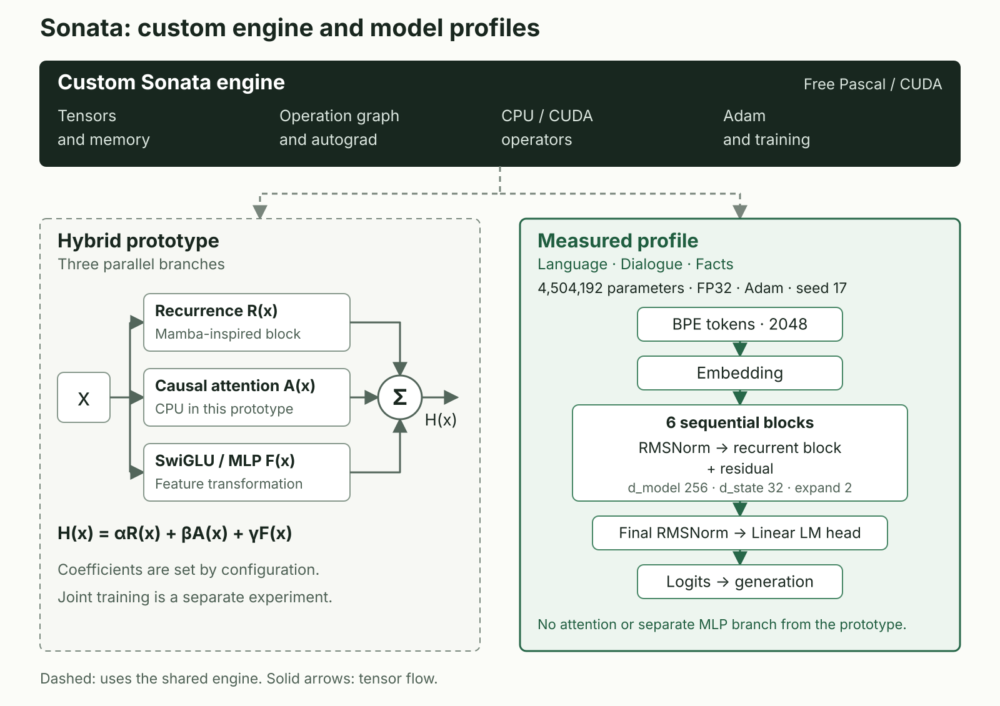
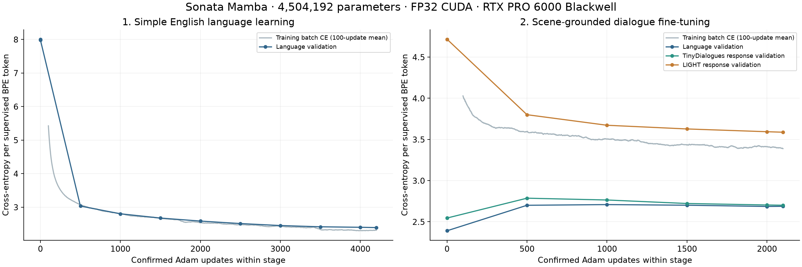
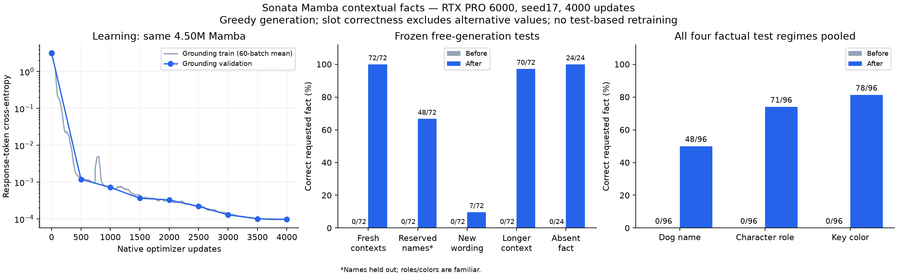
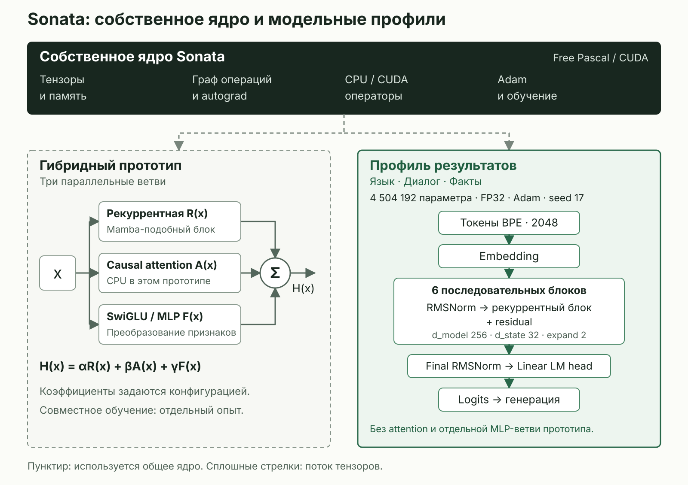

Sonata: A Neural Engine Built from Scratch in Free Pascal and CUDA
Sonata is a neural engine being developed from scratch in Free Pascal and CUDA. The project implements tensors, a computation graph, automatic differentiation, neural layers, an optimizer and model execution. This article investigates training our own models on that engine from freshly initialized parameters, without importing pretrained neural weights.
Abstract. We present a custom neural computation implementation and its experimental evaluation. The tensor engine, differentiation graph, forward and backward passes, layers and training are implemented in Sonata code; this path does not use ready-made PyTorch or TensorFlow neural modules or autograd. Sonata develops through our own research into a modular hybrid architecture: publications on automatic differentiation, Mamba/SSMs and other neural methods provide a research foundation and ideas for our own structures, parameterizations and combinations of computation. The reported learning results concern a specific Mamba-inspired Sonata profile. A six-layer, 4,504,192-parameter model learns English text from scratch. After task-specific fact training, performance changes from 0/72 to 72/72 on familiar-format contexts and from 0/72 to 70/72 on longer inputs. Transfer beyond task-training coverage is evaluated separately. Verification includes control models, paired fact changes, CPU/CUDA comparisons, independently recomputed metrics and fresh weight reloads.
1. Introduction
Sonata is being developed as a modular neural system with its own tensor operations, automatic differentiation, optimizers and CPU/CUDA execution. The motivation includes control over the computation path and investigation of its efficiency. Lower overhead relative to other stacks is a testable hypothesis; using Pascal alone does not establish a resource or speed advantage.
“From scratch” refers to two separate outcomes in this work: developing the computation implementation and obtaining weights through our own training. Layer classes, their composition into a model, gradient computation and parameter-update loops are written in the project. The 4.50M-parameter model starts language learning from freshly initialized parameters; dialogue and fact training continue its own saved weights. A downloaded neural network or a framework composition of imported trainable blocks is not the foundation of this experiment.
This report asks four questions: do the models learn the specified dependencies; how does the training regime affect transfer; what skills does a small language model acquire; and do the backends agree numerically? Tasks with unambiguous answers precede experiments with English text and a limited fact domain.
The learning experiments ran on 16 October 2026. A separate appendix covers execution of a pretrained NVIDIA checkpoint at the stage completed on 27 October. This report is dated 30 October 2026, version 1.0. Training our own models and executing external weights are treated separately.
2. Models and Implementation
2.1. Implementation, Ideas and Weight Provenance
The project combines our own research and development with the study of published work. Mamba [1], Adam [4], RMSNorm [5] and automatic differentiation methods [6] provide mathematical foundations and research context. Our own computation blocks, their composition and training in Sonata are developed on that basis. The network's constituent layers are implemented within the project and use its tensor engine and differentiation rules.
Table 1. Provenance of the trained system's components.
| Component | Origin | What these experiments use |
|---|---|---|
| Tensor engine and autograd | Custom Sonata implementation | Tensors, operation graph, backward rules and gradient accumulation |
| Neural layers and model | Custom Sonata implementation | Embedding, Linear, RMSNorm, Mamba blocks and their composition into a language model |
| Training and weight handling | Custom Sonata implementation | Adam, clipping, training loop, serialization, reload and generation |
| GPU computation | Sonata CUDA code and low-level cuBLAS | Custom kernels, including Mamba scan/backward; cuBLAS matrix operations |
| Neural weights | Learned in Sonata | Fresh initialization, followed by language, dialogue and fact stages |
| Training data | External corpora and experiment generators | Selected TinyDialogues/LIGHT data and synthetic tasks |
| Tokenizer preparation | External tokenizers library | An experiment-specific BPE vocabulary fitted only on training text |
Free Pascal, CUDA, cuBLAS and supporting Python libraries provide the development tools: a compiler, GPU access, basic linear algebra and data preparation. Sonata's own code defines the trained network, its computation graph and parameter-update rules. PyTorch and vLLM serve separate external reference checks in the Nemotron work described in Appendix A.
2.2. Custom Architecture and Hybrid Components
Sonata is an independently developed experimental modular architecture. Published work provides ideas; our design choices cover the computation graph, block parameterization, composition, differentiation rules and CPU/CUDA execution. The architecture evolves alongside our own experiments and verification.
The diagram shows a shared computation engine and two separate model profiles. The hybrid prototype combines three branches; the language, dialogue and fact experiments use a 4,504,192-parameter recurrent profile. Dashed connections indicate use of the engine, while solid arrows show tensor flow within each profile.

Vector diagram: wide layout · stacked layout.


The Mamba-inspired block used in the trained profile is our own variation of a selective recurrent model. It uses a dense projection of the time-step parameter Δ followed by a sigmoid transformation. By comparison, the standard configuration of the pinned original Mamba implementation [7] uses a low-rank Δ projection and softplus. This is a concrete parameterization difference: sharing an SSM idea does not make the blocks identical or their weights interchangeable.
Hybridization concerns combining different information-processing mechanisms. The project includes an experimental block with three parallel branches: Mamba-inspired recurrence, causal attention and SwiGLU/MLP. Their outputs are combined as a weighted sum, H(x) = αR(x) + βA(x) + γF(x), with coefficients set by configuration. Attention in this prototype has a CPU implementation. Expert routing and interaction between neural components and symbolic computation are also research directions.
The learning measurements in this article come from a recurrent-block profile without the attention and separate MLP branches of the hybrid prototype. Joint training of the full hybrid and measuring its contribution are separate experimental tasks. This distinguishes Sonata's broader architecture from the precisely defined configuration that produced the reported results.
2.3. Trained Configurations
In the sequence experiments, “Sonata Mamba” denotes the custom Mamba-inspired block described above. The language configuration consists of an embedding, six RMSNorm/Mamba/residual blocks, a final RMSNorm and a linear language-model head. This trained configuration has no attention. The ByteLevel BPE vocabulary contains 2,048 tokens.
Native Sonata performs the forward pass, backward pass and parameter updates. Python prepares data, launches binaries, checks exported values and plots metrics. Training uses FP32 and Adam; these results do not cover AMP or quantized training.
Table 2. Tested configurations and training budgets.
| Task | Parameters | Adam updates | Initializations | Backend |
|---|---|---|---|---|
| Same-sign classification, MLP | 82 | 300 | 17 / 29 / 43 | CPU |
| First-symbol recall, delay 4 | 1,561 | 600 | 17 / 29 / 43 | CPU |
| First-symbol recall, mixed lengths | 1,561 | 1,200 | 17 / 29 / 43 | CPU |
| First-symbol recall, delays up to 512 | 629,385 | 1,200 | 17 | CUDA |
| Language stage | 4,504,192 | 4,200 | 17 | CUDA |
| Dialogue stage | 4,504,192 | 2,100 more | same weight lineage | CUDA |
| Contextual facts | 4,504,192 | 4,000 more | same weight lineage | CUDA |
The MLP, small CPU Mamba and 629K-parameter CUDA model are separate configurations. The final three stages continue one weight lineage. Adam is reset between the language, dialogue and fact stages: these are weights-only continuations rather than full training-state resumes.
CPU experiments ran on an Intel Xeon at 2.20 GHz under Linux. CUDA training used an NVIDIA RTX PRO 6000 Blackwell Server Edition, FPC 3.2.2 and CUDA 13.0.88, with TF32 disabled. Saved weights were also checked on a Windows CPU. Native wall times, including periodic evaluation and saving, were 1,055.872 s for language, 550.440 s for dialogue and 1,020.978 s for facts. Provisioning, compilation and separate tests are excluded.
3. Experimental Protocol
3.1. Splits and Checkpoint Selection
Training, validation and test sets follow task-specific separation rules. Coordinates do not overlap in the sign task. Recall tasks separate distractor combinations, with each combination represented by all four target digits.
The language corpus uses selected TinyDialogues conversations [2] and LIGHT dialogues [3]. BPE is trained only on training text. Both sides of a LIGHT episode stay in the same split, as do identical normalized location descriptions. This is not exhaustive semantic deduplication of similar phrases.
Checkpoints are selected by validation cross-entropy. Test results do not select weights, budgets or stopping points. No further training followed inspection of the corresponding tests in these experiments. Repeated initializations share test inputs: evaluating three models on 512 inputs does not create 1,536 independent examples.
3.2. Metrics and Free Generation
Cross-entropy is averaged over supervised positions, excluding padding. Perplexity is defined as PPL = exp(CE). Language evaluation supplies the correct preceding tokens, so PPL measures teacher-forced token prediction rather than free-answer accuracy.
Free generation is evaluated separately. The model receives its previously selected tokens, chooses from the full vocabulary and stops at EOS or a specified boundary. The fact experiment uses greedy decoding with at most 32 new tokens, without external retrieval, candidate reranking or a gold answer prefix.
The slot_correct metric requires the target value and excludes other values of the same type from the test vocabulary. Full normalized response match is computed separately. A strict pair requires both requests with a changed target fact to receive their respective correct, different answers. These metrics apply to the specified task rather than the complete semantics of arbitrary conversation.
4. Results
4.1. Nonlinear Learning and Controls
The MLP Linear(2,16) → ReLU → Linear(16,2) learned whether two numbers have the same sign. Train/validation/test contained 256/128/512 inputs. Each of three initializations reached 512/512 correct test answers, up from 52.54–65.82% before training.
Controls used a linear network and the same MLP with training labels shuffled once, with the same budget. The table reports accuracy after validation-based checkpoint selection.
Table 3. Sign-task controls on a shared 512-input test set.
| Variant | Seed 17 | Seed 29 | Seed 43 |
|---|---|---|---|
| MLP, correct training labels | 100% | 100% | 100% |
| Linear network | 47.66% | 41.80% | 48.63% |
| MLP, shuffled training labels | 50.78% | 64.84% | 55.08% |
For shuffled labels at seed 29, the initial checkpoint was selected because validation CE did not improve. A separate grid extending beyond the training range yielded 88/100, with near-zero errors. A direct program solves the sign rule; this experiment checks whether the network learns the dependency.
4.2. First-Symbol Recall and Length Transfer
The sequence task maps an input such as 3abcd? to its first digit. After training at delay 4, a one-layer, 1,561-parameter Mamba solved 512/512 new inputs for each of three initializations. Replacing the first symbol with ? reduced accuracy to 25%, as expected when identical corrupted inputs correspond to four equally likely answers.
Fresh models were then compared using matched initial seeds and 1,200 updates: training only at delay 4 versus training at delays 2/4/8/16. Delays 24–128 did not participate in checkpoint selection.
Table 4. CPU Mamba transfer beyond training lengths; 512 inputs per delay.
| Delay | Fixed delay 4, range across three seeds | Mixed, seed 17 | Mixed, seed 29 | Mixed, seed 43 |
|---|---|---|---|---|
| 24 | 25.00–61.33% | 100% | 100% | 100% |
| 32 | 25.00–49.41% | 100% | 100% | 100% |
| 64 | 25% | 52.54% | 100% | 66.60% |
| 128 | 25% | 25% | 100% | 25% |
Both new regimes processed 38,400 sequences. Mixed-length training processed 364,800 input tokens versus 230,400, an increase of 58.33%. The comparison matches updates and sequences, but not tokens, compute or data diversity. It measures the changed regime without isolating a single causal factor.
A four-layer, 629,385-parameter CUDA Mamba trained at delays 4/16/64/128/256/512. It achieved 64/64 at each tested delay: 16/64/128/256/512/1024/2048/4096. Adding competing digits to the distractors yielded 16/64 at delays 128/512/1024. This is one seed and synthetic single-symbol recall; long-document language understanding was not measured.
4.3. Language Learning from Scratch
The six-layer Mamba first learned language on TinyDialogues, then dialogue responses on a LIGHT/TinyDialogues mixture. The following evaluations use the same held-out files for all four checkpoints.
Table 5. Teacher-forced perplexity on fixed language tests; lower is better.
| Test | Initial | After language | After dialogue | After facts |
|---|---|---|---|---|
| TinyDialogues language, 20,031 tokens | 2976.15 | 10.24 | 13.59 | 16.39 |
| TinyDialogues responses, 3,710 tokens | 2896.79 | 11.82 | 13.71 | 16.16 |
| LIGHT responses, 2,855 tokens | 2823.95 | 118.60 | 37.73 | 122.95 |

All responses to 31 selected prompts were separately retained: seven manual probes and 24 prompts from separate test dialogues. After both the language and dialogue stages, all 31 greedy responses ended with EOS. This establishes the termination behavior; meaning is assessed from the responses themselves. One literal response after the dialogue stage is:
Well, plants need water to grow, and plants need water to grow. They need water to grow big and strong.
The response is coherent but repetitive. Key and dog-name probes revealed weak use of supplied facts, motivating a separate task-training experiment.
4.4. Facts in a Limited Training Domain
The fact curriculum contains 24,000 training and 600 validation examples: a dog's name among a cat's name, a character's role among a neighbor's role, and the requested key among another key. It uses 12 training names, three wording variants and up to three distracting dialogue pairs. Some examples omit the requested fact and target I do not know.. Fact batches account for 90% of updates; the remaining 10% rehearse selected earlier TinyDialogues responses.
The frozen test has 319 requests: four groups of 72, 24 absent-fact requests and seven previous manual probes. The four fact groups include 144 counterfactual pairs, making observations dependent. New full contexts do not guarantee that every tuple of values is new.
Table 6. Free generation before and after task-specific fact training.
| Test | Before | After | Scope |
|---|---|---|---|
| New contexts, familiar values and wording | 0/72 | 72/72 | Learning within the domain |
| Longer contexts, up to 277 BPE tokens | 0/72 | 70/72 | Length transfer; training prompts have 80–179 tokens |
| Requested fact absent | 0/24 | 24/24 | Answering “I do not know” |
| New wording | 0/72 | 7/72 | Transfer beyond three training variants |
| All questions in contexts with reserved names | 0/72 | 48/72 | Familiar roles and colors alongside other names |
| Reserved-name questions only; subset of the preceding row | 0/24 | 0/24 | Reproducing a name outside task-training coverage |

Both members of 36/36 familiar-format changed-fact pairs were answered correctly, as were 34/36 longer-context pairs. This establishes answer dependence on the target fact within the tested format.
Pip, Nell, Zed, Tess, Otto and Milo are excluded from the current training/validation sets and 4,096 rehearsal records. Earlier language learning and BPE training were not split by these names. “Reserved name” therefore describes the current task-training holdout, not a demonstrated first encounter with the spelling.
5. Execution Verification and Available Data
Behavioral evaluation is supplemented by numerical checks. A small model supports comparison of all parameter gradients; the larger trained model supports sampled logit and generation comparisons. These scopes remain part of the interpretation.
Table 7. Verification before and after the language experiment.
| Object | Method | Result and scope |
|---|---|---|
| Small two-layer Mamba | Matched CPU/CUDA weights and inputs | Maximum logit difference 6.70 × 10⁻⁷; gradient difference 8.94 × 10⁻⁷ across 30 tensors |
| CE metric | Independent recomputation from logits | Difference up to 1.16 × 10⁻⁷ in the small probe |
| Causality and generation | Future-token changes; autoregressive steps versus full forward | Causality checked; eight tested argmax tokens agreed |
| Trained dialogue Mamba | CPU/CUDA on two 32-token prefixes | Maximum logit difference 1.3828 × 10⁻⁵; argmax agreed at 64 positions |
| Serialization and Windows inference | Fresh process and Linux-weight reload | CUDA CSV was byte-identical; Windows matched 64 argmax positions and selected real responses |
| Memory verification | Compute-sanitizer on the small gradient probe | Zero errors; large training was outside sanitizer |
Before the heavy CUDA experiment, 159 gradient ABI cases and 18,575 checked-optimizer assertions passed. A 256³ GEMM was compared with NumPy float64, giving a maximum absolute error of 1.40524409 × 10⁻⁶. These are specific numerical probes rather than exhaustive coverage of all sizes and models.
The fact scorer was checked with correct, incorrect and distractor-containing control answers. All 24,600 native corpus records were checked for text/token agreement, masks, padding and EOS; rebuilding 11 corpus files was byte-identical. Before/after responses were scored using the same current decoder.
This version includes summary data, language-stage metrics, dialogue-stage metrics, fact-training metrics and checksums of the supplied files. In the raw CSV files, train_batch accuracy and supervised_tokens fields are zero placeholders, not measurements; loss and separate validation rows are used as recorded.
Sonata's source code is currently in a private repository. This version provides the protocol, tables, figures and metric files for external examination. Saved models were checked by reloading their weights in fresh processes; Adam and RNG state were not saved with them. The language pilot uses a decoder that recomputes the growing full prefix. A streaming cache, full training-state recovery and long memory testing require separate validation.
6. Discussion
The results show a progression from a simple nonlinear dependency to sequences, English text and contextual facts. Linear-network, shuffled-label and erased-symbol controls help relate behavior to the specified task. The length comparison shows that changing the training regime can substantially affect transfer.
With minimal fact-domain coverage, the familiar format was learned. Weak transfer to other names and wording motivates a further question: how does broader data diversity change performance while preserving a separate test? This experiment does not isolate the effects of corpus coverage, model capacity or training choices. Assigning one established cause would be premature.
Specialization also changed earlier language metrics: LIGHT PPL increased from 37.73 to 122.95 after fact training. LIGHT was not included in that stage's rehearsal data. Measuring a new skill should be accompanied by checks of previously acquired behavior.
CPU experiments use three initializations; the larger GPU experiments use one. Models trained from scratch have not yet been compared with an external architecture at matched data and compute budgets. The scope of this work is therefore learning and behavior in specific configurations, together with the stated execution-verification coverage.
7. References
- Gu A., Dao T. Mamba: Linear-Time Sequence Modeling with Selective State Spaces. Original Mamba research.
- Feng S. Y., Goodman N. D., Frank M. C. Is Child-Directed Speech Effective Training Data for Language Models?. EMNLP 2024. TinyDialogues code and data.
- Urbanek J. et al. Learning to Speak and Act in a Fantasy Text Adventure Game. LIGHT project.
- Kingma D. P., Ba J. Adam: A Method for Stochastic Optimization. The optimization method implemented in Sonata's training path.
- Zhang B., Sennrich R. Root Mean Square Layer Normalization. The RMSNorm method.
- Baydin A. G., Pearlmutter B. A., Radul A. A., Siskind J. M. Automatic Differentiation in Machine Learning: a Survey. JMLR, 2018. Mathematical and implementation background on automatic differentiation.
- Gu A., Dao T. Original Mamba implementation, version v2.2.4. Used for the specific parameterization comparison.
- Sonata experiments: numerical summaries are supplied in results.json and file checksums in artifact-checksums.json. Archived figures retain the recorded measurements.
Appendix A. Executing Pretrained Nemotron Weights
A separate line of work executes the NVIDIA-Nemotron-3.5-Lightning-30B-A3B-NVFP4 checkpoint in Sonata, using NVIDIA's pretrained weights. The latest B3 stage ran 67 requests through all 52 layers, passing 20/20 application checks and six cache-reusing continuations. Intermediate model tensors and states remain on GPU; CPU execution is a separate complete backend.
Table A1. Native decode on one A100 80 GB, batch 1.
| Context | Previous native path, tokens/s | GPU-resident, tokens/s | Ratio |
|---|---|---|---|
| 512 | 10.40 | 30.22 | 2.90× |
| 2048 | 10.23 | 29.32 | 2.87× |
| 8192 | 9.88 | 26.10 | 2.64× |
There is one measured run per configuration after warmups. Throughput covers decode, excluding weight loading and prefill. At context 8192, prefill takes 56.936 s. Both paths use the same checkpoint, F32 storage and F64 attention; the gain combines residency and kernel changes. This comparison does not isolate the implementation language or CPU/GPU transport alone.
At the preceding stage, native execution and pinned vLLM both achieved 20/20 application results; generated IDs agreed on 21/21 quality/dialogue/repeat prompts. The external runtime is a behavioral witness, while Sonata's mathematical contract comes from the checkpoint and R_emu reference. vLLM was not rebenchmarked at B3; the preceding external measurements belong to a different GPU session and execution configuration.
A separate canonical F64 profile passes two full-depth R_emu diagnostic cases with logit normalized L2 up to 3.871 × 10⁻¹⁵. The original F32 profile still fails F1/F2/F4, leaving broader numerical acceptance open. These results concern execution of a pretrained model and do not compare the quality of our from-scratch Mamba with Nemotron.
Sonata: нейросетевой движок с нуля на Free Pascal и CUDA
Sonata представляет собой нейросетевой движок, разрабатываемый с нуля на Free Pascal и CUDA: в проекте реализованы тензоры, вычислительный граф, автоматическое дифференцирование, нейросетевые слои, оптимизатор и исполнение модели. В статье исследуется обучение собственных моделей на этом движке из начальной инициализации, без загрузки чужих предобученных нейросетевых весов.
Аннотация. Представлена собственная реализация нейросетевого вычислительного пути и её экспериментальная проверка. Тензорное ядро, граф дифференцирования, прямой и обратный проходы, слои и обучение реализованы в коде Sonata; готовые нейросетевые модули и autograd PyTorch или TensorFlow в этом пути не используются. Sonata развивается в ходе собственных исследований модульной гибридной архитектуры: публикации по автоматическому дифференцированию, Mamba/SSM и другим нейросетевым методам служат исследовательской базой и источниками идей для собственных структур, параметризаций и способов сочетания вычислений. Представленные результаты обучения относятся к отдельному Mamba-подобному профилю Sonata. Шестислойная модель на 4 504 192 параметрах обучается английскому тексту с нуля. После целевого обучения фактам результат в знакомом формате изменяется с 0/72 до 72/72, а на более длинных входах с 0/72 до 70/72. Перенос за пределы покрытия целевого обучения исследуется отдельно. Проверки включают контрольные модели, парные изменения фактов, сопоставление CPU/CUDA, независимый пересчёт метрик и повторную загрузку весов.
1. Введение
Sonata разрабатывается как модульная нейросетевая система с собственными тензорными операциями, автоматическим дифференцированием, оптимизаторами и исполнением на CPU/CUDA. Мотивация такого подхода включает контроль вычислительного пути и исследование его эффективности. Снижение накладных расходов относительно других стеков является проверяемой гипотезой; само использование Pascal не устанавливает преимущество по ресурсам или скорости.
Термин «с нуля» в этой работе относится к двум самостоятельным результатам: разработке вычислительной реализации и получению весов через собственное обучение. Классы слоёв, их соединение в модель, вычисление градиентов и цикл обновления параметров написаны в проекте. Модель на 4,50 млн параметров начинает языковой этап с начальной инициализации; диалоговый и фактический этапы продолжают её собственные сохранённые веса. Готовая скачанная нейросеть или конструктор из импортированных обучаемых блоков здесь не выступают основой эксперимента.
Настоящий отчёт отвечает на четыре вопроса: осваивают ли модели поставленные зависимости; как изменение учебного режима влияет на перенос; какие навыки приобретает небольшая языковая модель; согласованы ли вычисления разных backend. Сначала используются задачи с однозначным ответом, затем английский текст и ограниченный домен фактов.
Эксперименты обучения проведены 16 октября 2026 года. Отдельное приложение описывает этап исполнения готового checkpoint NVIDIA от 27 октября. Срез отчёта: 30 октября 2026 года, версия 1.0. Обучение собственных моделей и исполнение внешних весов рассматриваются раздельно.
2. Модели и реализация
2.1. Происхождение реализации, идей и весов
Проект сочетает собственные исследования и разработку с изучением опубликованных работ. Mamba [1], Adam [4], RMSNorm [5] и методы автоматического дифференцирования [6] дают математическую основу и исследовательский контекст. На этой базе разрабатываются собственные вычислительные блоки, способы их соединения и обучение в Sonata. Составные слои сети реализованы в самом проекте и работают через его тензорный движок и правила дифференцирования.
Таблица 1. Происхождение компонентов обучаемой системы.
| Компонент | Происхождение | Что используется в этих опытах |
|---|---|---|
| Тензорное ядро и autograd | Собственная реализация Sonata | Тензоры, граф операций, правила backward и накопление градиентов |
| Нейросетевые слои и модель | Собственная реализация Sonata | Embedding, Linear, RMSNorm, Mamba-блоки и их соединение в языковую модель |
| Обучение и работа с весами | Собственная реализация Sonata | Adam, clipping, цикл обучения, сохранение, загрузка и генерация |
| Вычисления на GPU | CUDA-код Sonata и низкоуровневая библиотека cuBLAS | Собственные ядра, включая Mamba scan/backward; матричные операции cuBLAS |
| Нейросетевые веса | Получены обучением в Sonata | Начальная инициализация, затем языковой, диалоговый и фактический этапы |
| Учебные данные | Внешние корпуса и генераторы опытов | Выбранные TinyDialogues/LIGHT и синтетические задачи |
| Подготовка токенизатора | Внешняя библиотека tokenizers | Собственный для этого опыта BPE-словарь, обученный только на train-текстах |
Free Pascal, CUDA, cuBLAS и вспомогательные Python-библиотеки составляют инструментальную основу разработки. Они предоставляют компилятор, доступ к GPU, базовую линейную алгебру и подготовку данных. Устройство обучаемой сети, её вычислительный граф и правила обновления параметров определяет собственный код Sonata. PyTorch и vLLM используются в отдельных внешних эталонных проверках линии Nemotron, описанной в приложении A.
2.2. Собственная архитектура и гибридные компоненты
Sonata представляет собой самостоятельную экспериментальную модульную архитектуру. Опубликованные работы служат источниками идей; собственные проектные решения охватывают устройство вычислительного графа, параметризацию блоков, их сочетание, правила дифференцирования и исполнение на CPU/CUDA. Архитектура развивается вместе с собственными экспериментами и проверками.
На схеме показаны общее вычислительное ядро и два отдельных модельных контура. Гибридный прототип объединяет три ветви; для языкового, диалогового и фактического опытов использовался рекуррентный профиль на 4 504 192 параметрах. Пунктир обозначает использование ядра, сплошные стрелки показывают поток тензоров внутри каждого контура.

Векторная схема: широкая версия · вертикальная версия.


Mamba-подобный блок, использованный в обучаемом профиле, является собственной вариацией селективной рекуррентной модели. В нём применяется плотная проекция параметра временного шага Δ и его сигмоидальное преобразование. Для сравнения, стандартная конфигурация закреплённой авторской реализации Mamba [7] использует низкоранговую проекцию Δ и softplus. Это конкретное различие в параметризации; сходство общей SSM-идеи не означает тождество блоков или взаимозаменяемость весов.
Гибридность реализуется на уровне сочетания разных механизмов обработки информации. В проекте существует экспериментальный блок с тремя параллельными ветвями: Mamba-подобной рекуррентной, causal attention и SwiGLU/MLP. Их выходы объединяются взвешенной суммой: H(x) = αR(x) + βA(x) + γF(x), где коэффициенты задаются конфигурацией. Attention в этом прототипе имеет CPU-реализацию. Также исследуются экспертная маршрутизация и взаимодействие нейросетевых компонентов с символическими вычислениями.
Численные результаты обучения в этой статье получены для профиля на рекуррентных блоках, без ветвей attention и отдельной MLP из гибридного прототипа. Совместное обучение полного гибрида и оценка его вклада составляют отдельную экспериментальную задачу. Таким образом, здесь описываются и более широкая архитектура Sonata, и точно определённая конфигурация, на которой получены приведённые результаты.
2.3. Обучаемые конфигурации
В последовательностных опытах обозначение «Mamba Sonata» относится к собственному Mamba-подобному блоку, описанному выше. Языковая конфигурация состоит из embedding, шести блоков RMSNorm/Mamba/residual, final RMSNorm и линейной выходной головы. Attention в этой обучаемой конфигурации отсутствует. Словарь ByteLevel BPE содержит 2048 токенов.
Forward, backward и обновления весов выполняются в native Sonata. Python подготавливает данные, запускает бинарные файлы, проверяет экспортированные числа и строит графики. Обучение использует FP32 и Adam; AMP и квантование обучения в эти результаты не входят.
Таблица 2. Проверенные конфигурации и бюджеты обучения.
| Задача | Параметры | Обновления Adam | Инициализации | Среда |
|---|---|---|---|---|
| Одинаковый знак двух чисел, MLP | 82 | 300 | 17 / 29 / 43 | CPU |
| Первый символ, задержка 4 | 1 561 | 600 | 17 / 29 / 43 | CPU |
| Первый символ, смешанные длины | 1 561 | 1 200 | 17 / 29 / 43 | CPU |
| Первый символ, задержки до 512 | 629 385 | 1 200 | 17 | CUDA |
| Языковой этап | 4 504 192 | 4 200 | 17 | CUDA |
| Диалоговый этап | 4 504 192 | ещё 2 100 | та же линия весов | CUDA |
| Факты из контекста | 4 504 192 | ещё 4 000 | та же линия весов | CUDA |
MLP, малая CPU Mamba и CUDA-модель на 629 тысяч параметров являются отдельными конфигурациями. Три последних этапа продолжают одну линию весов. При переходе между языковым, диалоговым и фактическим этапами Adam создаётся заново; это продолжение обучения из весов, а не восстановление полного состояния обучения.
CPU-опыты выполнялись на Intel Xeon 2,20 GHz в Linux. Для обучения CUDA использовалась NVIDIA RTX PRO 6000 Blackwell Server Edition, FPC 3.2.2 и CUDA 13.0.88; TF32 был отключён. Сохранённые веса дополнительно проверялись на CPU в Windows. Наблюдаемое время включает native-обучение, периодические оценки и сохранение: 1055,872 с для языка, 550,440 с для диалога и 1020,978 с для фактов. Подготовка среды, сборка и отдельные тесты сюда не входят.
3. Экспериментальный протокол
3.1. Разбиения и выбор весов
Обучающие, проверочные и тестовые наборы разделены по правилам конкретного опыта. В задаче знаков координаты не пересекаются. В задачах первого символа разделяются комбинации отвлекателей, причём каждая комбинация представлена со всеми четырьмя целевыми цифрами.
Языковой корпус использует выбранные разговоры TinyDialogues [2] и диалоги LIGHT [3]. BPE обучен только на train-текстах. У LIGHT обе стороны эпизода остаются в одном разбиении; одинаковые нормализованные описания мест также группируются внутри одного разбиения. Это не полная семантическая дедупликация похожих фраз.
Checkpoint выбирается по validation cross-entropy. Тест не выбирает веса, бюджет или момент остановки. После просмотра соответствующих тестов дополнительное обучение в этих опытах не выполнялось. Повторные инициализации используют общие тестовые входы: три модели на 512 входах не превращают набор в 1536 независимых примеров.
3.2. Метрики и свободная генерация
Cross-entropy усредняется по позициям с активной маской; padding исключён. Perplexity определяется как PPL = exp(CE). В языковых оценках предыдущие токены берутся из правильного текста, поэтому PPL измеряет предсказание токенов в режиме teacher forcing, а не точность свободных ответов.
Свободная генерация исследуется отдельно: модель получает свои ранее выбранные токены, выбирает из полного словаря и останавливается на EOS или заданной границе. Для опыта фактов используются greedy-генерация и максимум 32 новых токена, без внешнего поиска, ранжирования кандидатов или правильного префикса ответа.
Метрика slot_correct требует наличия нужного значения и отсутствия других значений того же типа из словаря теста. Полное нормализованное совпадение ответа считается отдельно. Строгая пара засчитывается, когда оба запроса с изменённым целевым фактом получили свои правильные, различающиеся ответы. Эти метрики ограничены поставленной задачей и не оценивают всю семантику произвольного разговора.
4. Результаты
4.1. Нелинейная зависимость и контрольные варианты
MLP Linear(2,16) → ReLU → Linear(16,2) училась определять, одинаковы ли знаки двух чисел. Train/validation/test содержали 256/128/512 входов. После обучения каждая из трёх инициализаций дала 512/512 правильных ответов; исходная точность составляла 52,54–65,82%.
Для контроля при одинаковом бюджете использовались линейная сеть и та же MLP с однократно перемешанными учебными ответами. В таблице указана точность после выбора весов по validation.
Таблица 3. Контроли задачи знаков, один общий test из 512 входов.
| Вариант | Seed 17 | Seed 29 | Seed 43 |
|---|---|---|---|
| MLP, правильные учебные ответы | 100% | 100% | 100% |
| Линейная сеть | 47,66% | 41,80% | 48,63% |
| MLP, перемешанные учебные ответы | 50,78% | 64,84% | 55,08% |
У варианта с перемешанными ответами и seed 29 выбран исходный checkpoint: улучшения validation CE не найдено. Отдельная сетка за пределами учебного диапазона дала 88/100 с ошибками около нуля. Обычная программа решает правило знаков напрямую; эксперимент проверяет обучение сети на этой зависимости.
4.2. Первый символ и перенос по длине
В последовательностной задаче вход имеет вид 3abcd?, а ответом должна быть первая цифра. Однослойная Mamba на 1561 параметре после обучения задержке 4 решила 512/512 новых входов у каждой из трёх инициализаций. Замена первого символа на ? снизила результат до 25%, ожидаемых для четырёх равновероятных ответов при одинаковом повреждённом входе.
Затем сравнили свежие модели с одинаковыми начальными seeds и 1200 обновлениями: обучение только задержке 4 и обучение задержкам 2/4/8/16. Длины 24–128 не участвовали в выборе весов.
Таблица 4. Перенос CPU Mamba на длины вне обучения; по 512 входов на длину.
| Задержка | Только длина 4, диапазон трёх seeds | Смесь, seed 17 | Смесь, seed 29 | Смесь, seed 43 |
|---|---|---|---|---|
| 24 | 25,00–61,33% | 100% | 100% | 100% |
| 32 | 25,00–49,41% | 100% | 100% | 100% |
| 64 | 25% | 52,54% | 100% | 66,60% |
| 128 | 25% | 25% | 100% | 25% |
Оба новых режима обработали 38 400 последовательностей. Смесь длин при этом содержит 364 800 входных токенов против 230 400, на 58,33% больше. Сравнение выравнивает обновления и последовательности, но не количество токенов, compute или разнообразие данных. Оно показывает результат изменённого учебного режима без изоляции одного причинного фактора.
Четырёхслойная CUDA Mamba на 629 385 параметрах обучалась задержкам 4/16/64/128/256/512. На каждой проверенной длине 16/64/128/256/512/1024/2048/4096 она дала 64/64. При добавлении других цифр среди помех результат составил 16/64 на задержках 128/512/1024. Это один seed и синтетическое воспроизведение одного символа; языковое понимание длинного текста здесь не измерялось.
4.3. Языковое обучение с нуля
Шестислойная Mamba обучалась сначала языку на TinyDialogues, затем ответам в диалогах на смеси LIGHT и TinyDialogues. Измерения ниже выполнены на одних и тех же отложенных файлах для всех четырёх версий весов.
Таблица 5. Teacher-forced perplexity на фиксированных языковых тестах; меньше лучше.
| Тест | До обучения | После языка | После диалогов | После фактов |
|---|---|---|---|---|
| Язык TinyDialogues, 20 031 токен | 2976,15 | 10,24 | 13,59 | 16,39 |
| Ответы TinyDialogues, 3 710 токенов | 2896,79 | 11,82 | 13,71 | 16,16 |
| Ответы LIGHT, 2 855 токенов | 2823,95 | 118,60 | 37,73 | 122,95 |
Отдельно сохранены все ответы на 31 выбранный запрос: семь ручных проверок и 24 запроса из отдельных test-диалогов. После языкового и диалогового этапов все 31 greedy-ответа завершились EOS. Это свидетельство освоения формата завершения; смысл проверяется по самим репликам. Один из буквальных ответов после диалогового этапа:
Well, plants need water to grow, and plants need water to grow. They need water to grow big and strong.
Фраза показывает связный текст с повтором. Запросы о ключах и имени собаки выявили слабое использование заданных фактов и стали мотивацией отдельного учебного опыта.
4.4. Факты из ограниченного учебного домена
Для извлечения фактов подготовлены 24 000 train- и 600 validation-примеров: имя собаки среди имени кошки, роль персонажа среди роли соседа и нужный ключ среди другого ключа. Используются 12 учебных имён, три формулировки и до трёх пар отвлекающих реплик. В части примеров нужный факт отсутствует, а целевой ответ равен I do not know.. 90% обновлений используют фактическую задачу, 10% повторяют выбранные прежние TinyDialogues-ответы.
Замороженный тест содержит 319 запросов: четыре группы по 72, 24 запроса без нужного факта и семь прежних ручных запросов. В четырёх фактических группах присутствуют 144 контрфактические пары, поэтому эти наблюдения зависимы. Новые полные контексты не гарантируют новизну каждого кортежа значений.
Таблица 6. Свободная генерация до и после целевого обучения фактам.
| Проверка | До | После | Область проверки |
|---|---|---|---|
| Новые контексты, знакомые значения и формулировки | 0/72 | 72/72 | Освоение задачи внутри домена |
| Контекст длиннее учебного максимума, до 277 BPE-токенов | 0/72 | 70/72 | Перенос по длине; train 80–179 токенов |
| Нужного факта нет | 0/24 | 24/24 | Ответ «не знаю» |
| Новая формулировка | 0/72 | 7/72 | Перенос за пределы трёх учебных вариантов |
| Все вопросы в контекстах с отложенными именами | 0/72 | 48/72 | Известные роли и цвета на фоне других имён |
| Только вопросы об отложенном имени; подвыборка предыдущей строки | 0/24 | 0/24 | Воспроизведение имени вне целевого покрытия |
В знакомом формате решены обе части 36/36 пар с изменённым фактом; на длинных входах 34/36. Это наблюдаемая зависимость ответа от целевого факта в проверенном формате.
Имена Pip, Nell, Zed, Tess, Otto и Milo исключены из текущих train/validation и 4096 повторяемых TinyDialogues-записей. Предыдущее языковое обучение и сам BPE по этим именам не разделялись. Следовательно, «отложенное имя» здесь означает ограничение текущего целевого обучения, а не доказанное первое знакомство модели с его написанием.
5. Проверка исполнения и доступные данные
Поведенческая оценка дополнена численной проверкой. Малая модель используется для сравнения всех параметрических градиентов, обученная большая для выборочного сопоставления logits и генерации. Границы этих проверок сохраняются при интерпретации результата.
Таблица 7. Проверки перед языковым опытом и после него.
| Объект | Метод | Результат и охват |
|---|---|---|
| Малая двухслойная Mamba | Одинаковые веса и входы CPU/CUDA | Максимальное отличие logits 6,70 × 10⁻⁷; градиентов 8,94 × 10⁻⁷ по 30 тензорам |
| Метрика CE | Независимый пересчёт по logits | Отличие до 1,16 × 10⁻⁷ в малой пробе |
| Причинность и генерация | Изменение будущего; авторегрессивные шаги и полный forward | Причинность проверена; совпали восемь проверенных argmax-токенов |
| Обученная диалоговая Mamba | CPU/CUDA на двух 32-токенных префиксах | Максимальное отличие logits 1,3828 × 10⁻⁵; совпали argmax на 64 позициях |
| Сохранение и Windows inference | Свежий процесс и загрузка Linux-весов | CUDA CSV совпал побайтно; в Windows совпали 64 argmax и выбранные реальные реплики |
| Проверка памяти | Compute-sanitizer на малой gradient-пробе | Ноль ошибок; большой training под sanitizer не выполнялся |
До тяжёлого CUDA-опыта отдельно прошли 159 gradient ABI cases и 18 575 утверждений checked optimizer. GEMM размером 256³ сравнивался с NumPy float64: максимальная абсолютная ошибка составила 1,40524409 × 10⁻⁶. Это конкретные численные пробы, а не исчерпывающая проверка всех размеров и моделей.
У оценщика фактов проверены правильные, неправильные и содержащие отвлекатель контрольные ответы. Все 24 600 native-записей корпуса проверены на соответствие текста токенам, маскам, padding и EOS; повторное построение 11 файлов корпуса совпало побайтно. Ответы до и после оценивались одним текущим декодером.
К этой версии приложены сводные численные данные, метрики языкового этапа, диалогового этапа, обучения фактам и контрольные суммы приложенных файлов. В сырых CSV строки train_batch содержат нулевые placeholders в полях accuracy и supervised_tokens: эти поля не являются измерениями; loss и отдельные validation-строки используются по назначению.
Исходный код Sonata пока находится в закрытом репозитории. Для внешнего изучения в этой версии предоставлены протокол, таблицы, графики и файлы метрик. Для сохранённых моделей проверялась загрузка весов в свежем процессе; состояние Adam и RNG вместе с ними не сохранялось. В языковом пилоте используется декодер с пересчётом растущего полного префикса. Потоковый кэш, полное восстановление обучения и длительные испытания памяти требуют отдельных проверок.
6. Обсуждение
Результаты показывают последовательный переход от простой нелинейной зависимости к обработке последовательностей, английскому тексту и использованию фактов. Контроли с линейной сетью, перемешанными ответами и удалением нужного символа помогают проверить связь результата с поставленной задачей. Сравнение учебных длин показывает, что изменение режима может существенно менять перенос.
При минимальном покрытии фактического домена освоен знакомый формат. Слабый перенос на другие имена и формулировки задаёт следующий исследовательский вопрос: как результат меняется при расширении разнообразия данных с сохранением отдельного теста. Из текущего опыта нельзя выделить самостоятельный вклад покрытия корпуса, ёмкости модели или настройки обучения. Назначать одну из этих причин установленной было бы преждевременно.
Специализация также изменила прежние языковые показатели: после обучения фактам LIGHT PPL выросла с 37,73 до 122,95. LIGHT не входил в повторяемые данные этого этапа. Проверка сохранения прежних навыков должна сопровождать измерение нового навыка.
CPU-опыты повторены с тремя инициализациями; большие GPU-опыты используют одну. Внешняя архитектура при равных данных и compute-бюджете с обученными с нуля моделями Sonata пока не сравнивалась. Поэтому область вывода этой работы: обучаемость и поведение конкретных конфигураций, вместе с проверенным охватом исполнения.
7. Литература
- Gu A., Dao T. Mamba: Linear-Time Sequence Modeling with Selective State Spaces. Исходная работа о Mamba.
- Feng S. Y., Goodman N. D., Frank M. C. Is Child-Directed Speech Effective Training Data for Language Models?. EMNLP 2024. Код и данные TinyDialogues.
- Urbanek J. et al. Learning to Speak and Act in a Fantasy Text Adventure Game. Проект LIGHT.
- Kingma D. P., Ba J. Adam: A Method for Stochastic Optimization. Метод оптимизации, реализованный в обучаемом пути Sonata.
- Zhang B., Sennrich R. Root Mean Square Layer Normalization. Метод RMSNorm.
- Baydin A. G., Pearlmutter B. A., Radul A. A., Siskind J. M. Automatic Differentiation in Machine Learning: a Survey. JMLR, 2018. Обзор математических и программных методов автоматического дифференцирования.
- Gu A., Dao T. Авторская реализация Mamba, версия v2.2.4. Используется для предметного сопоставления параметризаций.
- Эксперименты Sonata: сводка чисел доступна в приложенном results.json, контрольные суммы файлов в artifact-checksums.json. Архивные графики сохранены без изменения измерений.
Приложение A. Исполнение готовых весов Nemotron
Отдельная линия исследует исполнение checkpoint NVIDIA-Nemotron-3.5-Lightning-30B-A3B-NVFP4 в движке Sonata. Здесь используются готовые веса NVIDIA. Последний этап B3 провёл 67 запросов через все 52 слоя; 20/20 прикладных проверок и шесть продолжений с повторным использованием кэша прошли. Промежуточные модельные тензоры и состояния остаются на GPU, CPU backend существует отдельно.
Таблица A1. Native decode на одном A100 80 GB, batch 1.
| Контекст | Прежний native-путь, токенов/с | GPU-resident, токенов/с | Отношение |
|---|---|---|---|
| 512 | 10,40 | 30,22 | 2,90× |
| 2048 | 10,23 | 29,32 | 2,87× |
| 8192 | 9,88 | 26,10 | 2,64× |
По одному измеренному прогону на конфигурацию после прогревов; скорость относится к decode, без загрузки весов и prefill. На контексте 8192 prefill занимает 56,936 с. Оба пути используют одинаковый checkpoint, F32 storage и F64 attention; выигрыш объединяет размещение данных и изменения kernels. Из этого сравнения нельзя изолировать эффект языка реализации или одной только передачи CPU/GPU.
На предыдущем этапе native и pinned vLLM получили 20/20 прикладных результатов; generated IDs совпали на 21/21 quality/dialogue/repeat запросе. Внешний runtime является поведенческим свидетелем, математический контракт Sonata определяется checkpoint и эталоном R_emu. Новый benchmark vLLM на этапе B3 не выполнялся, а внешние замеры предыдущего этапа относятся к другой GPU-сессии и конфигурации исполнения.
Отдельный canonical F64-профиль проходит два полных диагностических случая R_emu с normalized L2 logits до 3,871 × 10⁻¹⁵. Исходный F32-профиль по-прежнему не проходит F1/F2/F4: более широкая численная приёмка остаётся открытой. Эти результаты относятся к исполнению готовой модели и не являются сравнением качества собственной обученной с нуля Mamba с Nemotron.